prerequisites
- About page.
- In the Generate Code section you should have some experience with:
a. Python programing language.
b. OpenCV library for python.
c. JSON file formate.
d. Some experience with linux operating system & the Raspberry Pi microprocessor. (This part is optional).
notes
2. Some of the demonstrational examples used in this User Guides are available in a folder called resources. This is the link of the folder (the link might not be available in the future). The purpose of this folder is to enable you to test some of the features of the software yourself.
3. In general there is no prerequisites for the "User Guides" since one of the main goals of this software is to make it usable by almost anyone (the "Generate Code" section is the main exception).
General Guide
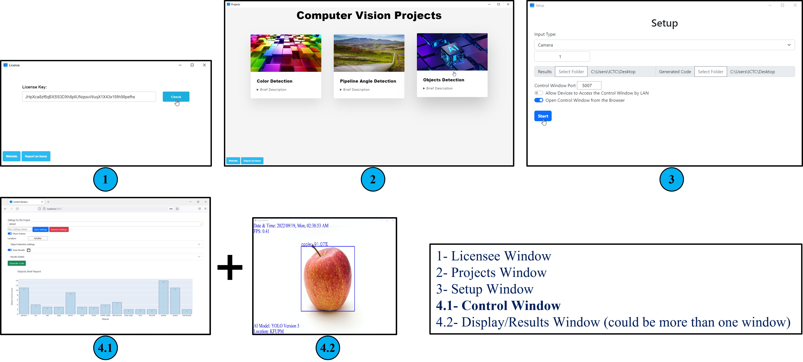
2-After accessing the software you will be presented with three projects each one with its brief description (There might be much more in the future!). In this window (and in the license window) if you have noticed some issues in the software, you could click on "Report an Issue" button and explain exactly what is your issue or give your feedback on github.com. Or click on "Website" to get more information related to the documentation, FAQs, troubleshot, best practices, etc.
3-The "Setup Window" will be the same for all projects. The most important parameter is the "Input Type" and its corresponding input. The input types are Camera, Image, Video, and IP Address (Image and Video are usually used for testing purposes).
4-After clicking the "Start" button in the "Setup Window", a window named "Control Window" will open with another window (or in some projects multiple windows) showing the results.
4.1-The Control Window will have all the parameters or settings related to the project which has been selected. Note that some parameters or settings are common for all projects.
4.2-The Display Window (or multiple windows) will display the results (note that its title will depend on the context of the display). If there are multiple windows, they will be numbered chronologically according to the operation the frame goes through so that the user would have more understanding on what is going on.
Control Window
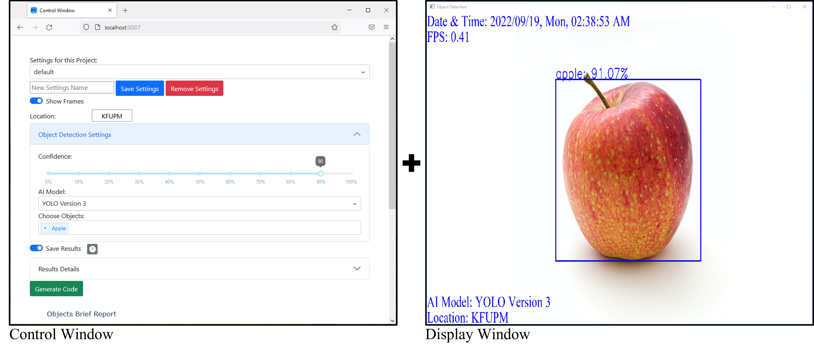
Control Window Features:
1.Question Mark
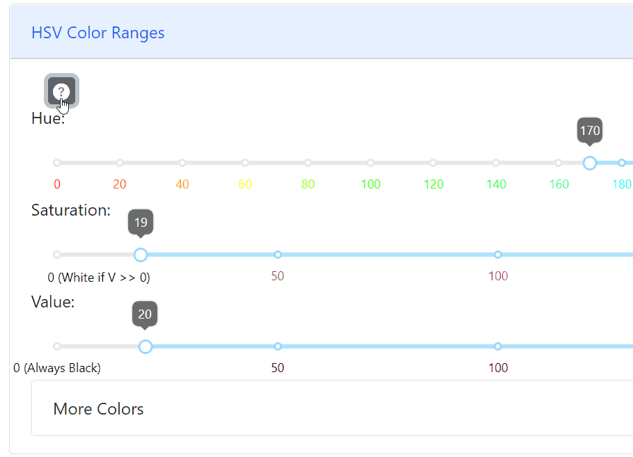
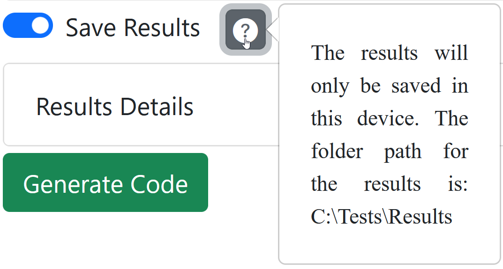
2.Common Settings
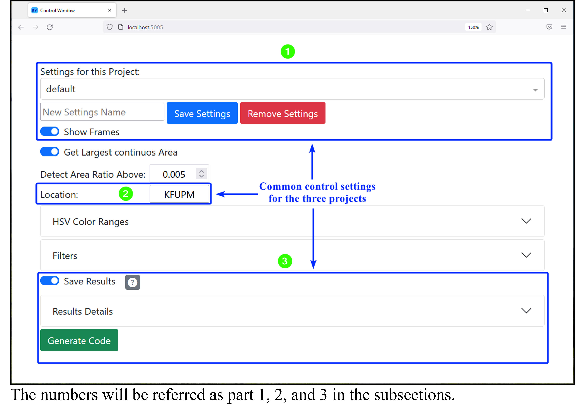
Part 1
Part 2
Part 3
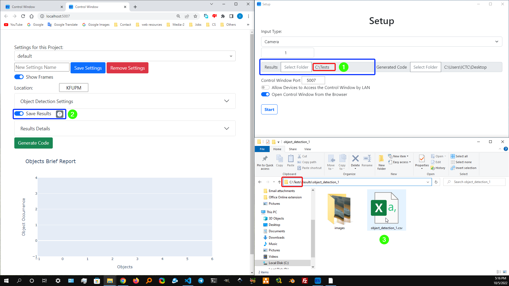
Note: you will not be able to see the results live if you open the file with Excel. So, one way to see the results live is to use the "visual studio code" editor software (you can easily download it since it is free and open source) and optionally install the "Rainbow CSV" extension to have similar results as in the demonstration.
All the details of a detection will be saved in a .csv file.
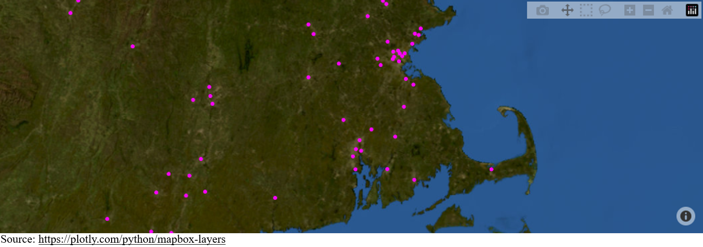
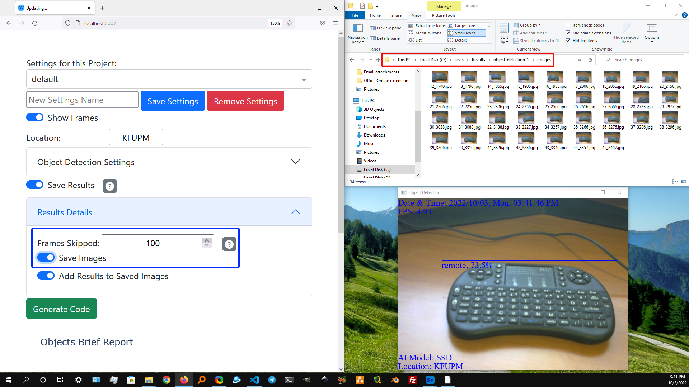
Notes:
1. The count includes the detected image so if something is detected at frame 1 and it will continue to be there then the next save will be in frame 100 not 101.
2. For the object detection project every object has its own separate dimension. Meaning that the first time a cat is detected is not like the first time a dog is detected. For an example if a dog, and a cat were detected at frame 1 and they remained being detected and an apple was detected at frame 2 and remained, and a remote was detected at frame 4 and remained and the "Frames Skipped" was set to 100 then the images which are being saved are 1, 2, 4, 101, 102, 104, 201, 202, 204 and so on. That make sense and should be more convenient for the user because if all objects where treated the same then some objects may get detected but never be saved as an image.
3. The "Frames Skipped" will not be applied to the csv file since it does not waste a lot of storage.
The "Save Images" is self explanatory. If it is off, then the images will not be saved in the "images" folder.
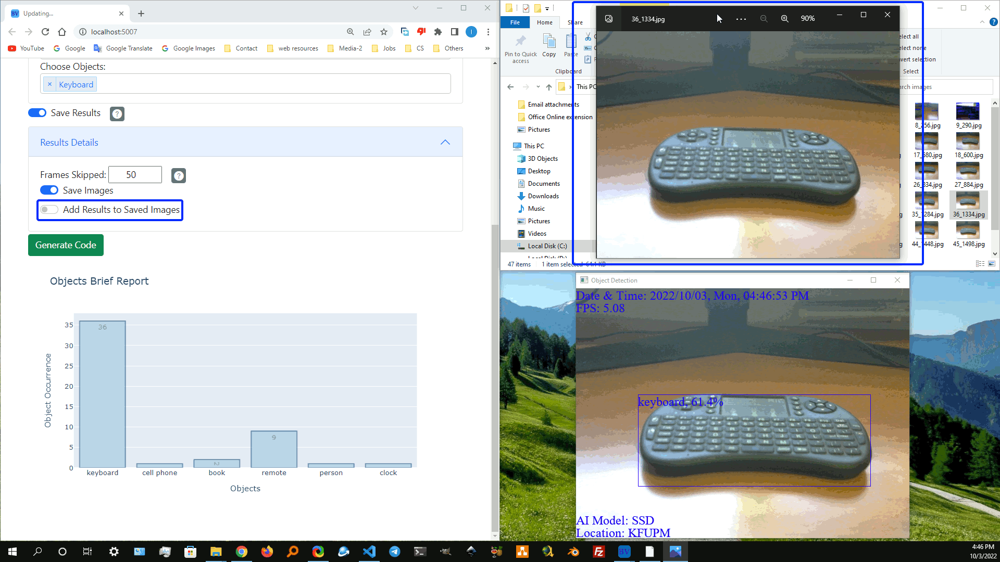
Generate Code
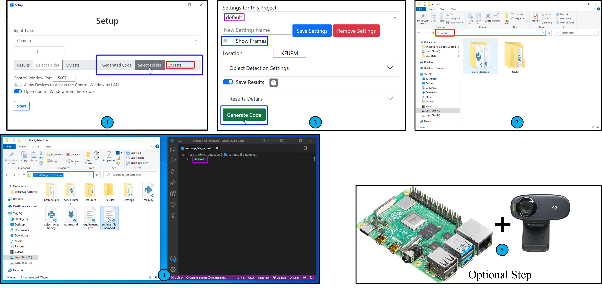
1-Select the path you want the project to be generated to.
2-The currant settings is named "default". You can change it from the menu or make your own setting. You do not need to check off the "Show Frames" but if it is turned on and your plaining to make this code run In the Raspberry Pi immediately after it is powered on (the instructions for that are in the read.md file), then the code will not work. The "Generate Code" button will make a folder with the setting selected in our case it is "default".
3-After clicking "Generate Code" in part 2 a folder will be made in the selected path from part 1.
4-After entering the generated folder (in our case it is named "object_detection" from part 3) we will see 5 folders and files. Here are the files and folders we should be concern of:
a-readme.md, b-main.py, c-settings_file_name.txt, d-settings folder, e-Results folder.
The rest we should not worry about . Even from a to e the only ones we could manually make changes to are b-main.py, c-settings_file_name.txt, and d-settings folder (the .json files) the reaming two are for reading only. Note that the illustration we have used is for the object detection project, but these steps should work the same for the remaining projects and possible future projects.
Here are the main files/folders we should consider in any generated code from the BV software:
a. readme.md: this file will have all the instructions for running the code
b. main.py: the starting point of the program. after going through the readme.md file you could run the code and it should work. For the rest of the files/folders (4.c, 4.d, and 4.e) you do not need to even open them for the program to work but sometimes it is useful to make some changes which suits your needs.
c. settings_file_name.txt: This is the file which is opened in the right window in part 4. In it you put the name of the setting you want to use. In our case because we generated the code, and the settings was on "default" in part 2 then "default" is what is in this file. if the setting name in part 2 is test then the value test will be in this file.
d. settings folder: All the setting files (.json files) are in this folder and one of them is "default". Note that all the files (.json files) should have the same structure. The possible values and meaning of each variable is in the documentation section of the website: https://ibrahimaljalal.github.io/BV/documentation (the domain might change in the future). An example of how to use the .json file is in the next illustration. Note that in OpenCV unlike most software the color channels are (b,g,r) instead of (r,g,b).
e. Results folder: This folder will simply save any detection in your project.
5-In case you want to use this code on a Raspberry Pi make sure you use version 4 with 64-bit architecture and the operating system is "Raspberry Pi OS" (64-bit). Make sure to install the 64-bit OS not the 32-bit OS (before 2022 64-bit was not available and 32-bit might still be the default)
A brief demonstration on how to use of the .json file
Connect Other Devices
1. Stream to the Software
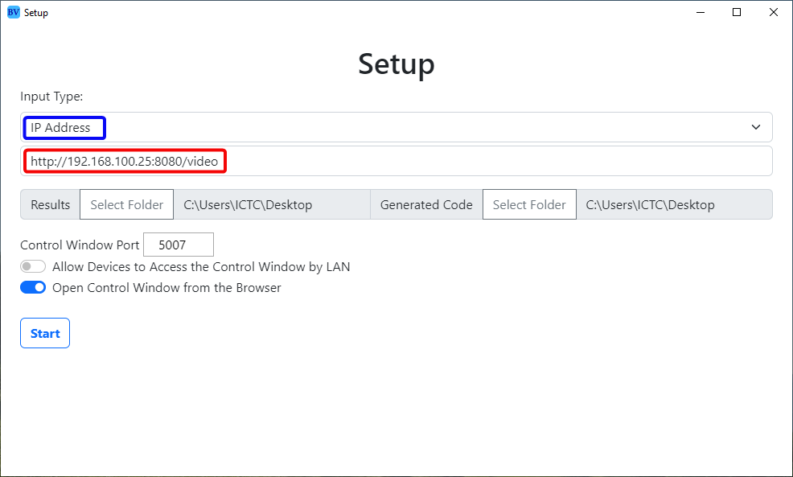
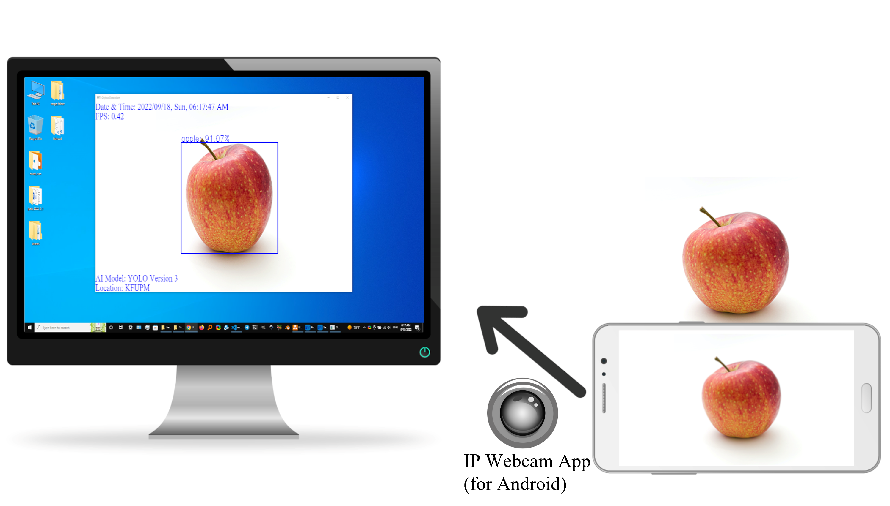


If you have an Android Device, then use the "IP Webcam" app to stream to the software. The instructions will be available in detail (not shown in the image) once you select the "IP Address" as an "Input Type" in the "Setup Window". Make sure you are at the same local area network (LAN). The type of communication is TCP which means we should not worry about corruption in the footage. The speed of the TCP in the LAN network is fast so there is currently no need for UDP in this software.
2. Connect to the Control Window
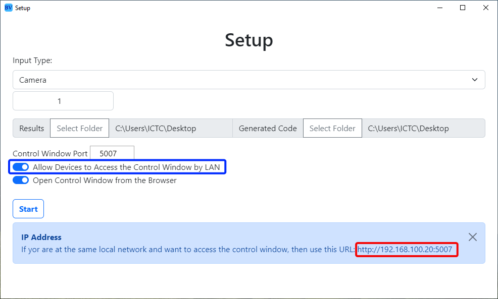
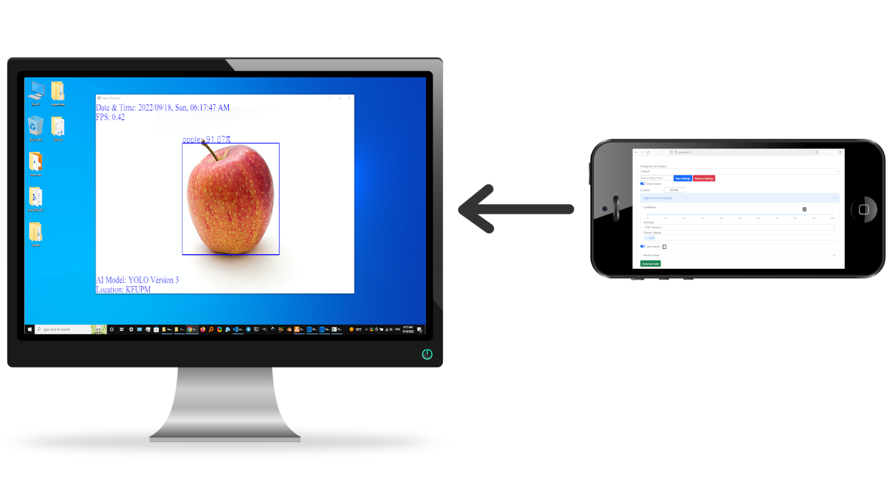
If you are at the same local area network (LAN) then you can allow other devices from the network to access the "Control Window" of the software. Note that you could connect as many devices as you like but it is recommended to use one.